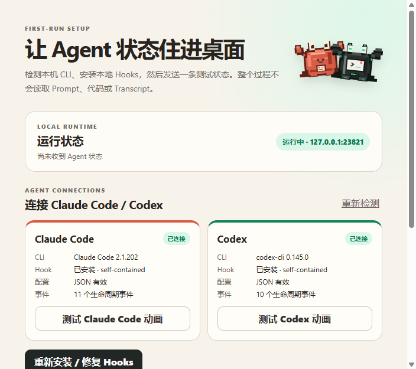

Claude Codethinking…
Claude Codethinking…The privacy contract
Your work stays out of the pet.
Allowed metadata
Agent, session ID, lifecycle state, project basename, tool name, timestamp.
Never forwarded
Prompts, code, transcripts, assistant messages, tool payloads, permission decisions.
Local transport
Authenticated loopback HTTP on 127.0.0.1. No analytics or telemetry.
Know before you connect
Setup you can actually verify.
See detected CLI versions, Hook health, local runtime status, and the self-contained runner. Repair connections and send a test state from one screen.

One glance is enough
Seven states, no dashboard.
IdleThinkingWorkingApprovalSuccessErrorSleeping
Two-minute setup
Native hooks. Safe coexistence.
The app detects Claude Code and Codex, validates configs before writing, preserves unrelated hooks, and rolls back on failure.
1. Download for Windows
2. Open Pixel Agent Buddy
3. Connect detected Agents
No separate Node.js required.